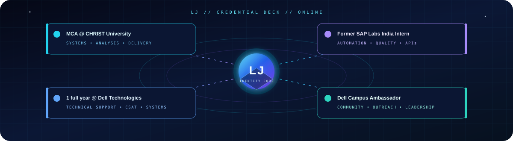

PROJECT MULTIVERSE // INTERACTIVE IDENTITY PORTAL
LJ / SIGNAL ARCHITECT
LOKRAJ
JOSHI
Data & Business Analysis · Technical Solutions · Quality Engineering
I translate messy signals into useful systems: insight-led analysis, dependable workflows, and interfaces that are built to be tested.
LJONLINE
ANALYZEVALIDATESHIPSTATUS SIGNAL ONLINE · MOVE THROUGH THE DECK TO REVEAL THE SYSTEM
01
Credential Deck
VERIFIED SIGNALS
02
System Worlds
SELECTED BUILDS
WORLD / 01
CarePulse
Full-stack care and learning workflow with a focus on practical product thinking.
OPEN REPOSITORY ↗ WORLD / 02Student Project Tracker
CRUD-driven tracking system that turns scattered project work into a visible pipeline.
OPEN REPOSITORY ↗ WORLD / 03Signal Runner
A browser game built as an interactive proof of frontend state, input handling, and deployment.
PLAY LIVE GAME ↗03
Engagement Signal
CURSOR-REACTIVE
Every interaction is intentional: hover the system worlds, move across the page, and watch the LJ signal core track your path.
READ THE ENGINEERING LOG ↗